import Pkg;Multisite spatial rainfall HMM with Gaussian conditional dependence
This tutorial describes the spatial HMM model for multisite rainfall occurrences. It extends this tutorial by replacing conditionally independent Bernoulli emissions at each station with a SpatialBernoulli copula model that captures spatial dependence between stations via an exponential covariance kernel.
It is based on the paper Spatio-temporal generation of precipitation using a Hidden Markov Model, extended extreme distributions and conditional Gaussian fields.
Here, the model is fixed to K = 4 hidden states and local_order = 1 (one day of local memory). It is applied to the same set of 10 stations in France as in the previous tutorial. However, contrary to the previous model where conditional independence was assumed, implying that stations would be far enough apart, here it is possible to use stations that are closer together.
Set up
Package and functions
using CSV, DelimitedFiles # File Read/Load/Save
using JLD
using DataFrames, DataFramesMeta # DataFrames
using Dates
using StatsBase, Random
using DistributionsThe main package is StochasticWeatherGenerators.jl, which provides the interface to the models and data. SmoothPeriodicStatsModels.jl contains the smooth periodic models used in this tutorial, in particular the ARPeriodicHMMSpatial model and its fitting routines.
using StochasticWeatherGenerators # interface to use with SmoothPeriodicStatsModels.jl
using SmoothPeriodicStatsModels # Small collection of smooth periodic models e.g. AR, HMM, HMMSpatial
using OptimizationOptimJL, LineSearchesRandom.seed!(123)Random.TaskLocalRNG()Settings for plotting
Some settings and packages to have nice plots.
using StatsPlots, LaTeXStrings
using StatsPlots.PlotMeasures # To play with margin in Plots
gr() # plotly() # for interactive plots
default(fontfamily="Computer Modern")
cur_colors = get_color_palette(:auto, 100);
my_palette(K) = palette(vcat(cur_colors[1], [cur_colors[c] for c in 3:4], cur_colors[2]), K)
file_for_plot_utilities = download("https://raw.githubusercontent.com/dmetivie/StochasticWeatherGenerators.jl/master/examples/utilities_plot.jl")
include(file_for_plot_utilities)cyclic (generic function with 1 method)To plot maps, we use GeoMakie.jl + NaturalEarth.jl.
file_for_maps_with_geomakie = download("https://raw.githubusercontent.com/dmetivie/StochasticWeatherGenerators.jl/master/examples/utilities_geo_makie_features.jl") # download file from a GitHub repo
include(file_for_maps_with_geomakie)savefigcrop (generic function with 4 methods)Global Parameters
The period of the Seasonal HMM is chosen as the number of days in a year. Our choice is 366 however we carefully skip February 29 when needed.
T = 366366Define the French area for map (Longitude and latitude) plot and the precision of the map precision_scale
precision_scale = 50 # meter
LON_min = -5 # West
LON_max = 10 # East
LAT_min = 41 # South
LAT_max = 52 # North52HMM Hyperparameters
Number of hidden states
K = 4
my_pal = my_palette(K); # just colors I like for plotting weather regime!Degree 𝐃𝐞𝐠 of the trigonometric expansion
𝐃𝐞𝐠 = 11Local memory order i.e. at station $j$, $\mathbb{P}(Y_n^{(j)} = y_n^{(j)} \mid Z = k, Y_{n-1:n-\texttt{local memory}}^{(j)} = y_{n-1:n-\texttt{local memory}}^{(j)})$
local_order = 1
size_order = 2^local_order2Initial range parameter $R_0$ for the exponential covariance kernel of the SpatialBernoulli distribution (in km).
R0 = [400, 400, 300, 200]4-element Vector{Int64}:
400
400
300
200Distance threshold fraction used to build the neighborhood weight matrix wp (only pairs of stations closer than tdist * max_distance are considered).
tdist = 0.30.3Number of quasi-Monte Carlo samples for the multivariate normal CDF estimation in the spatial likelihood.
QMC_m = 30
println("K = $K, ", "degree = $𝐃𝐞𝐠, ", "local_order = $local_order")K = 4, degree = 1, local_order = 1Data
Select relevant stations from the station.txt file
Here we
- Remove white space at the right of the
CN, STANAME which is caused by imperfect CVS importation - Select only the stations with 100% valid data for the period
Date(1955,12,31) .≤ :DATE .≤ Date(2019,12,31) - Shorten station names
begin
station_file = Base.download("https://raw.githubusercontent.com/dmetivie/StochasticWeatherGenerators.jl/master/weather_files/stations.txt")
station_all = CSV.read(station_file, DataFrame, header=18, normalizenames=true, ignoreemptyrows=true)
station_all = @chain station_all begin
@transform(:CN = rstrip.(:CN), :STANAME = rstrip.(:STANAME))
@subset(:STAID .∈ tuple([32, 33, 34, 36, 39, 203, 322, 323, 434, 736, 737, 738, 740, 742, 745, 749, 750, 755, 756, 757, 758, 786, 793, 2192, 2203, 2205, 2207, 2209, 11244, 11245, 11247, 11249]))
@transform(:STANAME = shortname.(:STANAME))
end
end
selected_station_name = ["BOURGES", "TOULOUSE", "MARIGNANE", "LUXEMBOURG", "LILLE", "EMBRUN", "BASTIA", "LA HAGUE", "CHASSIRON", "ORLY"]
station = @subset(station_all, :STANAME .∈ tuple(selected_station_name))
STAID = station.STAID
station_name = station.STANAME10-element Vector{SubString{String}}:
"BOURGES"
"TOULOUSE"
"MARIGNANE"
"LUXEMBOURG"
"LILLE"
"EMBRUN"
"BASTIA"
"LA HAGUE"
"CHASSIRON"
"ORLY"Sort stations (index) by latitude. It is useful for plotting from North to South.
staid_lat = sortperm(station.LAT, rev=true);Station number
D = length(STAID)10Pairwise distance matrix
Convert LAT/LON coordinates from DMS to DD (decimal degrees).
LAT_idx = dms_to_dd.(station.LAT)
LON_idx = dms_to_dd.(station.LON)10-element Vector{Float64}:
2.3594444444444447
1.3788888888888888
5.215833333333333
6.203333333333333
3.0975
6.501944444444445
9.485277777777776
-1.9394444444444445
-1.4116666666666666
2.3841666666666668Build the pairwise distance matrix my_distance (in km) between stations using the haversine formula.
my_locations = hcat(LON_idx, LAT_idx) # (D × 2) matrix: [longitude, latitude]10×2 Matrix{Float64}:
2.35944 47.0592
1.37889 43.6208
5.21583 43.4378
6.20333 49.6258
3.0975 50.57
6.50194 44.5656
9.48528 42.5406
-1.93944 49.7253
-1.41167 46.0467
2.38417 48.7167We define the haversine great-circle distance (in km) and build the $D \times D$ distance matrix.
function haversine_km(coords1, coords2; R=6371.0)
lon1, lat1 = deg2rad(coords1[1]), deg2rad(coords1[2])
lon2, lat2 = deg2rad(coords2[1]), deg2rad(coords2[2])
dlat = lat2 - lat1
dlon = lon2 - lon1
a = sin(dlat / 2)^2 + cos(lat1) * cos(lat2) * sin(dlon / 2)^2
return 2R * asin(sqrt(a))
end
my_distance = [haversine_km(my_locations[i, :], my_locations[j, :]) for i in 1:D, j in 1:D]10×10 Matrix{Float64}:
0.0 389.922 460.523 402.595 394.104 … 434.196 309.524 184.315
389.922 0.0 309.971 762.243 783.528 724.274 348.062 571.88
460.523 309.971 0.0 692.197 809.078 886.754 598.167 626.188
402.595 762.243 692.197 0.0 245.127 585.738 693.325 295.441
394.104 783.528 809.078 245.127 0.0 370.912 603.231 212.383
424.112 422.323 162.193 563.13 714.653 … 857.381 640.118 558.275
753.465 668.949 361.263 827.296 1016.8 1186.43 949.826 880.402
434.196 724.274 886.754 585.738 370.912 0.0 410.929 333.376
309.524 348.062 598.167 693.325 603.231 410.929 0.0 411.993
184.315 571.88 626.188 295.441 212.383 333.376 411.993 0.0Date range
date_start = Date(1956)1956-01-01Date including the previous days used in the initial condition (in case local_memory > 0)
date_start_w_memory = date_start - Day(local_order)
date_end = Date(2020) - Day(1)
every_year = date_start:Day(1):date_end
every_year_w_memory = date_start_w_memory:Day(1):date_end
n2t = dayofyear_Leap.(every_year)
N = length(n2t)23376Treat data
Load into a DataFrame the (ECA) RR files (rain). It filters by date and valid data. It also adds a column :RO for rain occurrences (0: dry, 1: wet).
begin
data_stations = collect_data_ECA.(STAID, date_start_w_memory, date_end, "https://raw.githubusercontent.com/dmetivie/StochasticWeatherGenerators.jl/master/weather_files/ECA_blend_rr/RR_", portion_valid_data=1, skipto=22, header=21, url=true)
for i = eachindex(data_stations)
@transform!(data_stations[i], :RO = onefy.(:RR))
end
endBinary matrix version of the rain event at the D stations.
Yall = BitMatrix(reduce(hcat, [data_stations[j].RO for j = 1:D]))
Y_past = BitMatrix(Yall[1:local_order, :]) # rand(Bool, local_order, D)
ξ = [1; zeros(K - 1)]; # 1 jan 1956 was most likely a type Z = 1 wet day all over France
Y = Yall[1+local_order:end, :]23376×10 BitMatrix:
1 1 1 1 1 1 1 1 1 1
1 1 0 1 1 0 1 0 1 0
0 0 0 0 0 0 1 0 0 0
0 0 0 0 0 0 0 0 0 0
0 0 0 0 0 0 0 0 0 0
0 1 1 0 0 0 0 0 0 1
1 1 1 0 1 0 1 1 1 1
1 1 1 1 1 1 0 0 1 1
0 1 1 1 1 1 1 1 1 0
1 0 0 1 1 1 0 1 1 1
⋮ ⋮
1 1 0 1 1 1 0 1 1 1
1 0 0 1 1 0 0 0 0 0
0 0 0 1 0 0 0 1 1 0
1 0 0 1 1 0 0 1 0 1
1 0 0 1 0 0 0 0 0 0
0 0 0 0 0 0 0 0 1 0
0 0 0 0 1 0 0 0 1 0
0 0 0 0 0 0 0 0 1 0
0 0 0 0 0 0 0 0 1 0Map of stations
long_spell = [longuest_spell(y) for y in eachcol(Y)]
FR_map_spell = map_with_stations(LON_idx, LAT_idx, long_spell; station_name=station_name, show_value=true, colorbar_show=true, precision_scale=precision_scale, colorbar_label="Days")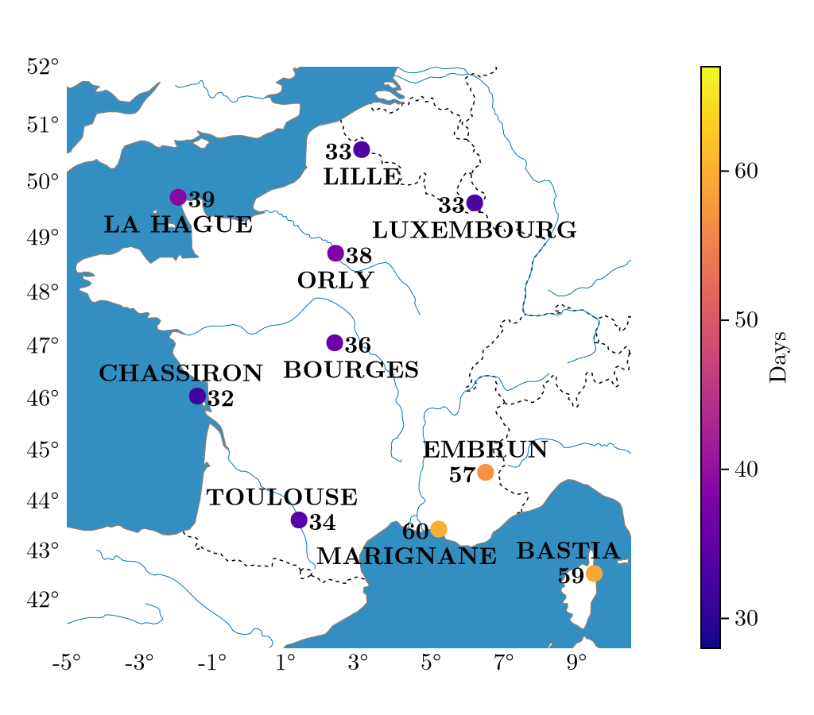
Step 1: Fit the non-spatial seasonal HMM
We first fit the standard (non-spatial) autoregressive periodic HMM using the Baum-Welch EM algorithm. The result provides the transition parameters θᴬ and the Bernoulli emission parameters θᴮ, which serve as the starting point for the spatial extension.
Fit slice: naive estimation
Before inferring the HMM parameters with the EM (Baum-Welch) algorithm, we do a first naive inference that will be used as initial condition for the EM.
The reference station ref_station is used to sort the hidden states obtained via the slice initialisation. Here we choose j=1 $\to$ STAID=32 $\to$ BOURGES because it is a central station for France.
ref_station = 11The following code loads the HMM fitted in the previous tutorial Multisite HMM with independent Bernoulli emissions. It will be used as the initial condition for the spatial HMM fitting.
hmm_ind_infos = JLD.load(joinpath(pkgdir(StochasticWeatherGenerators), "assets", "tuto_1", "hmm_fit_K_4_d_1_m_1.jld"))
hmm_ind = hmm_ind_infos["hmm"]
hist_ind = hmm_ind_infos["hist"]
θq_fit_ind = hmm_ind_infos["Q_param"]
θy_fit_ind = hmm_ind_infos["Y_param"];The Spatial model need also the range parameter θᴿ for the exponential covariance kernel of the SpatialBernoulli distribution. The range parameter trigonometric coefficients θᴿ are initialised with a constant $\log(R_0)$, which corresponds to a time-invariant spatial range of $R_0$ km.
size_degree_of_P = 2 * 𝐃𝐞𝐠 + 1
θᴿ = zeros(K, size_degree_of_P)
θᴿ[:, 1] .= log.(R0)4-element view(::Matrix{Float64}, :, 1) with eltype Float64:
5.991464547107982
5.991464547107982
5.703782474656201
5.298317366548036Build the initial ARPeriodicHMMSpatial
The function Trig2ARPeriodicHMMSpatial converts trigonometric coefficient arrays into the model matrices A (transition), B (Bernoulli probabilities) and R (spatial range), and returns an ARPeriodicHMMSpatial object.
hmm_spa_init = Trig2ARPeriodicHMMSpatial(fill(1 / K, K), θq_fit_ind, θy_fit_ind, θᴿ, T, my_distance)ARPeriodicHMMSpatial{Float64, Matrix{Float64}}([0.25, 0.25, 0.25, 0.25], [0.5868668408587475 0.1928671335456206 0.1728993870023848 0.047366638593247114; 0.27597478926511165 0.4722340192478287 0.07708716933108992 0.17470402215596964; 0.18794832946522635 0.12398289093908083 0.5045183073094124 0.18355047228628035; 0.04680120290704497 0.17755340772348222 0.08096831926821985 0.6946770701012529;;; 0.587786825713534 0.19234608241730602 0.17265160720975595 0.04721548465940398; 0.2761458281730326 0.47199154006611443 0.0771993838265445 0.17466324793430857; 0.18768201945009894 0.12367549022923353 0.5050775685984038 0.18356492172226369; 0.047032276622593884 0.1775985045614481 0.0809848690221809 0.6943843497937771;;; 0.5886873341187724 0.1918457475593868 0.17240032706651848 0.04706659125532241; 0.27629965819575314 0.4717560982600045 0.07731156187358716 0.1746326816706553; 0.1874079464089642 0.12337190379840313 0.505628497007749 0.1835916527848836; 0.04726201155740169 0.17764228564971346 0.08100458503757119 0.6940911177553137;;; … ;;; 0.5839921989971251 0.19455414318442701 0.1736203837124747 0.047833274105973295; 0.2753591387297734 0.4730028138631222 0.07675060216790908 0.17488744523919533; 0.1886995358080815 0.12492728775198556 0.5027923864429884 0.1835807899969447; 0.04610091657866967 0.17741031768242926 0.08093767132697106 0.69555109441193;;; 0.5849693064648621 0.19397121053352123 0.1733839095214479 0.047675573480168695; 0.2755813657861573 0.4727397470762202 0.07686274949864871 0.17481613763897388; 0.18845719968847927 0.12460886060512172 0.503375529275158 0.183558410431241; 0.046335426705629436 0.1774593042549475 0.08094472055074053 0.6952605484886826;;; 0.5859275947493566 0.19340885802860475 0.17314353250417944 0.04752001471785907; 0.27578661001422516 0.47248345119641294 0.07697494813766144 0.1747549906517003; 0.18820676065259503 0.12429403773065185 0.5039508986969805 0.1835483029197725; 0.04656888744047196 0.177507004367115 0.08095493640386711 0.694969171788546], [399.9999999999999 399.9999999999999 … 399.9999999999999 399.9999999999999; 399.9999999999999 399.9999999999999 … 399.9999999999999 399.9999999999999; 299.99999999999994 299.99999999999994 … 299.99999999999994 299.99999999999994; 199.99999999999991 199.99999999999991 … 199.99999999999991 199.99999999999991], [0.981204193290502 0.9812908125120599 … 0.9810179366397906 0.9811132449126639; 0.6318560127737154 0.6317660105795291 … 0.632001224176564 0.6319344239791045; 0.3690616746903602 0.36872223418462086 … 0.36971886831497097 0.36939392154484957; 0.026908793631810566 0.02690024027960471 … 0.026922549254720613 0.026916230988091063;;; 0.7915683408556836 0.7924154485343424 … 0.7898677940752655 0.7907190379194332; 0.2449922497480503 0.24517745356331475 … 0.24462587149864382 0.2448083716283781; 0.4782029835290756 0.479237108871491 … 0.47618967168050447 0.47718707184483944; 0.048207330548945986 0.047918805082674126 … 0.048787492576015494 0.04849692227206452;;; 0.5343230801902145 0.5335775225111303 … 0.5357960675029726 0.5350626676917899; 0.014224216939775877 0.014064657600864401 … 0.01453676747800135 0.014381638914697441; 0.5062362539179782 0.5056224654459309 … 0.5074062444216632 0.5068309052897179; 0.06466305230091506 0.06476164313811256 … 0.06442526691919183 0.06455089382120187;;; 0.7878055742796023 0.78779469557356 … 0.7878185399923744 0.7878135231198522; 0.7156099646122924 0.7158604373813692 … 0.71506419757052 0.7153445335395191; 0.13232800362614858 0.13239258800188072 … 0.13220738459282216 0.1322662642117528; 0.0775981082673 0.07759142821735175 … 0.0776137979674865 0.07760556551497431;;; 0.8549561148126898 0.8544833250637102 … 0.8558620026198622 0.8554156869043983; 0.8262370198394501 0.8262481706985608 … 0.8261584891323143 0.8262071255926541; 0.17445362945268325 0.17356040120152652 … 0.17622599235674383 0.17534227891610607; 0.11948912439322579 0.11898301563639768 … 0.12050093567208392 0.11999515335898425;;; 0.6394712512012005 0.6386268039698725 … 0.6412314495412182 0.6403395792305694; 0.013296619703695634 0.013339967653457244 … 0.013224622055860898 0.013258181160646634; 0.1946869517031334 0.1942276805272398 … 0.19575780973798268 0.19519694607922408; 0.007371650663383988 0.007397948214103464 … 0.007329052841301432 0.007348693439971094;;; 0.38599822874904266 0.3862176634781505 … 0.38552340099558813 0.38576678247405644; 0.14981243057881707 0.15018873705983374 … 0.14900948053643065 0.14941926865268618; 0.6829377652841341 0.6841002009067234 … 0.6804497882346948 0.6817209438423524; 0.1740163884638914 0.17483767459542338 … 0.17231624755516536 0.17317574616400355;;; 0.8751882956514617 0.8753066270870409 … 0.8748596457874008 0.8750393184875981; 0.7093649825160315 0.7085134702213626 … 0.7109860202525065 0.7101892042840131; 0.4482237702465888 0.4479466727131397 … 0.44864320842326694 0.44845597602253306; 0.17060120137503554 0.1706570926894769 … 0.17048021167881486 0.17054223439981692;;; 0.9668955475743061 0.9668602584221143 … 0.9669308432320655 0.9669190700919472; 0.48205567026112095 0.4814076210450356 … 0.4833349061772758 0.4826981629778728; 0.4397959969034393 0.4400901618948835 … 0.4391181875934662 0.4394719688071532; 0.06219220554468967 0.06238591802413049 … 0.061813466609265615 0.062001376857798246;;; 0.9606177698931939 0.9607336528873963 … 0.9603723495777171 0.9604973362334264; 0.7961338087455658 0.7958462731779405 … 0.7966684013758293 0.7964078651557976; 0.20731207173841776 0.20674441722856465 … 0.20839606759003323 0.20786271160424036; 0.030625319637750413 0.030412815971579337 … 0.031045551578968034 0.030836269355334896;;;; 0.9689564660564415 0.9690454310841159 … 0.9687671023898652 0.9688636911866174; 0.7763887252094845 0.7764638550800831 … 0.7761965786074447 0.7762996282505776; 0.5504124018185422 0.5512404654591132 … 0.5487015216536593 0.5495660085976319; 0.15011159796663534 0.14982739300486647 … 0.15064967139139873 0.15038573343008815;;; 0.8889463896455145 0.8890650639632608 … 0.8886868004241641 0.88882029667378; 0.5270649438196356 0.5271292658637625 … 0.5268707682948084 0.526978769904136; 0.7228426031202002 0.7240061641469183 … 0.7204968529148764 0.7216727231808499; 0.25401289436679353 0.2543385873229716 … 0.2532982828214277 0.25366607282092923;;; 0.6399035220036322 0.6394191162558177 … 0.6408516817867366 0.6403810871712969; 0.05466359297320712 0.05504851790430137 … 0.05389051829809363 0.054277535970130936; 0.7438251516632406 0.7436905012041249 … 0.7440337421051422 0.7439395706206915; 0.3038257049369265 0.3033572714303543 … 0.30457451398536545 0.3042315398449815;;; 0.9503633189565173 0.9501516109981102 … 0.9507614441173076 0.9505665860330699; 0.8703535987047757 0.8705855864366154 … 0.8698649670058086 0.8701133810863639; 0.4549636699049926 0.4556395312068459 … 0.45361290418598016 0.4542880604270206; 0.35893536108531804 0.35867193849409207 … 0.3594348816228932 0.3591897033525315;;; 0.908462184428282 0.9085202554682058 … 0.9083313284433754 0.9083992055805166; 0.8445230615954207 0.8443137056532946 … 0.8449304015123135 0.8447286431796033; 0.39283085767011006 0.39226131887810417 … 0.39394793592659655 0.3933931228879964; 0.30238542275323305 0.30132815130137 … 0.30449415105036565 0.3034408700567136;;; 0.8038218814063588 0.8032565010152205 … 0.8050029294898959 0.8044041217978656; 0.2093178470329328 0.20993392823888662 … 0.20809618157380658 0.20870520940786683; 0.5803495130504318 0.5793453587210353 … 0.5824868051473369 0.5813967980939245; 0.06907350936513561 0.06894232714727759 … 0.06938414851427148 0.06922076629827364;;; 0.5742759602690773 0.573809289424832 … 0.5752168935438223 0.574745208763028; 0.41592689017169243 0.41623050234976355 … 0.41523107637877826 0.41559370851778216; 0.81821334755681 0.8182368794009945 … 0.8181060094910467 0.8181697237157903; 0.5222788694958055 0.5225718445494665 … 0.5215943684057911 0.52195301390622;;; 0.9353371502254967 0.9353077216166261 … 0.9353449023498951 0.9353495419822009; 0.8196976274487321 0.8195004667669836 … 0.8200291881287015 0.8198738693487918; 0.6249419353471058 0.6236308843461217 … 0.6274314862119983 0.6262088743831032; 0.3279281392385863 0.3282345179958008 … 0.3273451420672564 0.3276316559522611;;; 0.9648493785975618 0.964861808665476 … 0.9647963316909456 0.9648275564093581; 0.7504705979097556 0.7501917580396484 … 0.7509622819929822 0.7507274494712832; 0.6651285421047392 0.6654161900736137 … 0.6644319237825781 0.6648004405951912; 0.24873106845736537 0.2498502630776516 … 0.24646992991376152 0.24760414512563886;;; 0.9511381939282202 0.9513554910574059 … 0.9506882177078732 0.9509157667997336; 0.7768635099892117 0.7768240722999208 … 0.7769361888719322 0.7769008856052156; 0.352120726537833 0.35254264214965053 … 0.35122509080974584 0.3516814894315135; 0.14284380537233837 0.142185628633716 … 0.1441118016708579 0.14348599401313997], [0.0 389.921602477971 … 309.5235737796454 184.31480663310447; 389.921602477971 0.0 … 348.06246435157544 571.8796662997325; … ; 309.5235737796454 348.06246435157544 … 0.0 411.99332545145717; 184.31480663310447 571.8796662997325 … 411.99332545145717 0.0])Fit the spatial HMM with EM
fit_mle! runs the EM algorithm for ARPeriodicHMMSpatial. It updates the transition parameters θᴬ, the Bernoulli emission parameters θᴮ, and the spatial range parameters θᴿ jointly.
The solver keyword specifies the inner optimiser used for the range update step (M-step for R).
For time sake in this tutorial, we load the fitted model but show bellow the code to run the EM algorithm (that can take an hour or so).
solver = OptimizationOptimJL.LBFGS(linesearch=LineSearches.BackTracking())
@time "FitMLE HMMSpa (EM)" history, all_θᴬ_iter, all_θᴮ_iter, all_θᴿ_iter = fit_mle!(hmm_spa_init, θq_fit_ind, θy_fit_ind, θᴿ, Y, Y_past; solver=solver, n2t=n2t, maxiter=100, tol=1e-3, maxiters_R=100, display=:iter, tdist=tdist, QMC_m=100);
JLD.save(joinpath(pkgdir(StochasticWeatherGenerators), "assets", "tuto_3", "hmm_fit_K_4_d_1_m_1.jld"), "history", history, "all_θq_iter", all_θᴬ_iter, "all_θy_iter", all_θᴮ_iter, "all_θr_iter", all_θᴿ_iter);hmm_infos = load(joinpath(pkgdir(StochasticWeatherGenerators), "assets", "tuto_3","hmm_fit_K_$(K)_d_$(𝐃𝐞𝐠)_m_$(local_order).jld"))
history = hmm_infos["history"]
all_θq_iter = hmm_infos["all_θq_iter"]
all_θy_iter = hmm_infos["all_θy_iter"]
all_θr_iter = hmm_infos["all_θr_iter"]98-element Vector{Matrix{Float64}}:
[5.991464547107982 0.0 0.0; 5.991464547107982 0.0 0.0; 5.703782474656201 0.0 0.0; 5.298317366548036 0.0 0.0]
[5.4690190071854445 0.059664451966169776 0.046313849797367905; 5.536484796194368 0.05459766304270743 0.008870526045881816; 5.3139093459245865 0.04283802694180259 -0.0006079029179229511; 5.2040267682423424 0.006542213615306669 0.002157091539957415]
[5.413935431116865 0.09198724398824455 0.07919373114006467; 5.483780650248829 0.07418307161185479 0.006570954830912291; 5.284962635729483 0.06154664523466446 -0.002345841133248412; 5.286450486214157 0.014291459178040125 -0.007899318457846827]
[5.40711481109 0.11482825137470037 0.1028978396293871; 5.477547106647169 0.08859955325406654 0.0029485661622448904; 5.2856991121622725 0.07064267263554123 -0.0019422755017369866; 5.345619133587426 0.023202936174086353 -0.018965287762446943]
[5.41348122360217 0.13122878211868386 0.11938153261758681; 5.487962627390281 0.09737395753765742 -0.0003034865696559217; 5.296496950288462 0.07287919931360726 -0.001956277379531926; 5.387445527806271 0.029823189568418153 -0.029012859589955024]
[5.424658435149038 0.14363419299285218 0.13073972174943158; 5.5032513130740135 0.10250847937182782 -0.002626102431203626; 5.310118452018988 0.07152884514648129 -0.002951829577820015; 5.416755372695579 0.03407525396961199 -0.03783793225148907]
[5.437737796322656 0.15317511942795092 0.13829351426923717; 5.518813511941439 0.10550936073162553 -0.004040937486514435; 5.323728566061175 0.06841766432655239 -0.004756363281510799; 5.436802037928841 0.036463299565384424 -0.045499989817186164]
[5.4514263526956315 0.16069213696649934 0.1433223043134982; 5.532901479524557 0.10721558370265732 -0.004790576384520309; 5.336267974690447 0.06463052232252621 -0.007124415775654488; 5.449681294664917 0.03723636339072183 -0.05241901507901049]
[5.464970736969991 0.16657416037004452 0.14660367750643527; 5.545070230463024 0.10814362951150004 -0.00504499040115742; 5.347357660334403 0.060751787227766446 -0.009813761690158835; 5.457168990569736 0.03687286621142289 -0.05887410412902246]
[5.477966521045452 0.17131596722030198 0.14859425784557276; 5.555264291990889 0.10855191086154137 -0.0050311640493755465; 5.356984806137457 0.056947881254111425 -0.012686524483065202; 5.460487936827255 0.03552145207900378 -0.06495972024328239]
⋮
[5.673971782736763 0.16823950501616575 0.07675604246876147; 5.579493718074805 0.08476015888729004 0.01517240808979464; 5.424998988860152 0.01234169314110253 -0.06525637336094295; 5.241251922337612 -0.00795893137893335 -0.19623455450799623]
[5.674395145800812 0.16802027896387295 0.07638725225667153; 5.579325221866681 0.08467703537146572 0.015343150078286613; 5.425101158396522 0.012362875327934193 -0.06517814709519562; 5.240809471136296 -0.007681222390140554 -0.19608895371255392]
[5.674751094622273 0.16774380025745286 0.07605855322439481; 5.57916944888232 0.08466422013396262 0.015500457415509273; 5.425190241552429 0.012383148003221035 -0.06511130123433233; 5.240361938492231 -0.007514930347583752 -0.19606946914196965]
[5.675127173953059 0.16748791450947786 0.0756434947657592; 5.57906856587662 0.08471945997846086 0.015649386713243563; 5.425195685251828 0.012258895211275565 -0.06505934062389492; 5.239863627365442 -0.007382734441517099 -0.19587249492390346]
[5.67553918079923 0.16720808650147737 0.07526937334500725; 5.578872471431595 0.08474112769751813 0.01576733355712128; 5.425291728483191 0.012248255763811973 -0.06499505252294605; 5.2394778184918245 -0.007241907314252809 -0.19572409490347006]
[5.675882786723141 0.16700141338114893 0.07492974008352235; 5.578731848928549 0.08473997421478148 0.015884756403027056; 5.425370319133446 0.012232105492969415 -0.06491325701705647; 5.239079018924714 -0.007129326607217901 -0.19548171422392382]
[5.676265622939543 0.16675003770511476 0.07449180500467632; 5.578602424916361 0.08473299634504505 0.016035764813752372; 5.4254414291885995 0.012245125312351642 -0.06484275619034205; 5.238637856685405 -0.006968244240148778 -0.1952646704069948]
[5.676649484093848 0.1664740139255058 0.07410612916115275; 5.578427657837047 0.08475418977790258 0.016191760410145143; 5.425541232624186 0.012189755028202381 -0.06483525460035756; 5.238257793059182 -0.006729281871868191 -0.19502385947728162]
[5.677031078334193 0.16620114113573728 0.07378120475456172; 5.578234216034882 0.08478993220296098 0.01627605742235997; 5.425573999715357 0.012154760731925372 -0.06480323278598303; 5.237884444958234 -0.006617106082417203 -0.19478470877521853]In classic EM algorithm, the log-likelihood is guaranteed to increase at each iteration. However, here a modified EM (see paper) and 1) increase was not demonstrated theoretically (though it might be true) 2) the spatial likelihood is estimated with a quasi-Monte Carlo method, which adds some noise to the likelihood estimation. Therefore, it is possible to observe some non-monotonicity in the log-likelihood convergence curve.
Hence, we recover the iteration with the highest log-likelihood:
iter_best = argmax(history["logtots"])26history["logtots"][iter_best]-115271.96506707612Reconstruct the best model from the stored parameter iterates:
hmm_spa = Trig2ARPeriodicHMMSpatial(fill(1 / K, K), all_θq_iter[iter_best+1], all_θy_iter[iter_best+1], all_θr_iter[iter_best+1], T, my_distance)ARPeriodicHMMSpatial{Float64, Matrix{Float64}}([0.25, 0.25, 0.25, 0.25], [0.767559023438987 0.09467892170464827 0.12403055213761861 0.013731502718746277; 0.21083616478694173 0.6033499334827024 0.05334194079071332 0.13247196093964253; 0.19202010739585965 0.06712515721208757 0.6539654060318981 0.08688932936015469; 0.0038140718354891783 0.1590983967767135 0.08251293499275178 0.7545745963950455;;; 0.7687240623839193 0.09380384874706302 0.12379446049300602 0.013677628376011627; 0.21076541545444524 0.6032480999325754 0.05323438169184971 0.13275210292112963; 0.1918810219984983 0.0670203697626611 0.6539434282780889 0.08715517996075167; 0.003974408893466103 0.1590856709558567 0.08244688393403533 0.7544930362166419;;; 0.769868232679482 0.09295395291140833 0.12355734561296425 0.0136204687961454; 0.21068249448010365 0.6031507825418145 0.053126789517481635 0.13303993346060008; 0.19172075054154925 0.06692059718559706 0.6539216344415666 0.08743701783128713; 0.004142721643702803 0.1590688409058879 0.08238303629049448 0.7544054011599147;;; … ;;; 0.7639384757987605 0.09745759409408586 0.12473115051215962 0.013872779594994004; 0.21097519842643336 0.6036825861667379 0.053664120138469 0.1316780952683596; 0.19230974182128513 0.06746963273881143 0.6540334015604585 0.08618722387944501; 0.00337729723640714 0.15911255622734277 0.08272449974164821 0.7547856467946018;;; 0.7651662532722937 0.09650555480215096 0.12449905312003344 0.01382913880552188; 0.21094106961487585 0.6035671740376807 0.05355684026291835 0.13193491608452512; 0.19223450760287578 0.06734978783160668 0.6540103073811603 0.08640539718435727; 0.003515862314442951 0.1591117801199384 0.08265172573488207 0.7547206318307366;;; 0.7663730945972355 0.09557941056712295 0.12426546796876681 0.013782026866874821; 0.21089472147255642 0.6034562901690941 0.05344943701467648 0.1321995513436731; 0.19213795107238138 0.06723496268845262 0.6539876688628812 0.08663941737628482; 0.003661340940061351 0.15910707983310846 0.08258120955232054 0.7546503696745096], [328.23765192426004 328.9441000045342 … 326.7739197611823 327.51414782227357; 298.38751835012874 298.3787237138492 … 298.378385413023 298.3874055687413; 229.1257525670271 228.91902558548043 … 229.5354170863646 229.33123783832707; 208.1274213502327 207.56728200024403 … 209.25470955202746 208.68994895584845], [0.9348073548404042 0.9341931436068037 … 0.9359904837899334 0.9354064293925282; 0.3813541175976695 0.3809216872024698 … 0.3822500673451897 0.3817969501870455; 0.3594778895271648 0.35797119014819184 … 0.36248768582441193 0.36098355155392564; 0.022827162918005267 0.022829133866586783 … 0.022819169062341525 0.022823840798263936;;; 0.6320245055992711 0.6321851356274519 … 0.6317340750508066 0.6318741355348824; 0.18185276075182363 0.18174732817448183 … 0.18207323859229035 0.18196140676601458; 0.4153170815058899 0.4153761171937007 … 0.415265844869202 0.4152803210243155; 0.04368621078508337 0.043274314797229874 … 0.044517627697465305 0.044100689977432043;;; 0.3474898785697189 0.34683650405654326 … 0.34881840305517664 0.3481505712584414; 0.012639090086682379 0.012227665670787303 … 0.01349543132103527 0.013061658144137555; 0.4341377593584785 0.43348882718314574 … 0.43537711225959613 0.43476725684250017; 0.09346102282925398 0.09327700853005556 … 0.0937769269939548 0.09362770680954002;;; 0.820443411935189 0.8187216144122847 … 0.8238154002248941 0.8221414144174151; 0.5840731506627309 0.5849917819075571 … 0.5822205196766775 0.5831493066485522; 0.1570108603520087 0.15641636819843593 … 0.158220100528554 0.1576121475743228; 0.044765884166491555 0.044676380659756286 … 0.0449563725657273 0.04485921663375821;;; 0.843523231248476 0.8417989104581218 … 0.8468881574763426 0.8452196794869306; 0.6667341610165263 0.6670001690065178 … 0.6661724581193191 0.6664582342756105; 0.22531037324201 0.22366090516970763 … 0.2285958105545453 0.22695557311590625; 0.07414308944676219 0.07369058906309107 … 0.07506639645492746 0.07460171318636814;;; 0.45692069468394353 0.4556864562917136 … 0.4594797583695066 0.4581852454907993; 0.011241919718275224 0.011249800665057992 … 0.011239432506026128 0.011238464670029156; 0.16254774701944363 0.1618649788489684 … 0.16403548380631028 0.16327118197708135; 0.012310725580006524 0.012319430273961181 … 0.01230770498868348 0.01230681827071432;;; 0.2896087571593473 0.2897716673722951 … 0.28927914465298404 0.2894445663417315; 0.17580659173686822 0.17637890670879647 … 0.17459111135106978 0.17521053462153524; 0.7096325876752203 0.7108093870393337 … 0.7070921084410281 0.7083935181230063; 0.15618237763729098 0.15668641822435037 … 0.155126787550011 0.1556624034725764;;; 0.8764579455905476 0.8762905261430822 … 0.8767040295406365 0.876595765335897; 0.5438180974112339 0.5420291219379357 … 0.5473652357039731 0.545596985718606; 0.4908809359181455 0.4896217683182636 … 0.49321542266434154 0.49207894800545576; 0.10467815239141683 0.10498744935309126 … 0.10407626994127375 0.10437440886762529;;; 0.9770346303031243 0.9767227536866858 … 0.9776201883756921 0.9773336757235316; 0.2819630094038478 0.281090490861201 … 0.28375252748679375 0.28285041837496855; 0.4235519769653024 0.4226470958664208 … 0.42525394491948193 0.4244210334519205; 0.03569582429545654 0.035842369015778794 … 0.03541675693893571 0.035553956139540766;;; 0.8962827052961654 0.8951480653527939 … 0.898488503654336 0.8973961697376457; 0.5056278486971211 0.5054459033268835 … 0.5060074345038251 0.5058150442074947; 0.24909388112173436 0.2473899844821306 … 0.2524837822306643 0.25079204870706684; 0.025683625762829426 0.0254953008805221 … 0.02606308950415488 0.025872907219339;;;; 0.9037484125307589 0.9034017800647357 … 0.9044256186855467 0.9040897111739259; 0.6162423854812953 0.6164100751696614 … 0.6158871755970161 0.6160680696118132; 0.5562544238124011 0.5558372252841609 … 0.5570709183520384 0.5566656943072682; 0.14319418056899633 0.14263996183986066 … 0.14427380256431216 0.14373888265277024;;; 0.784138228351258 0.7838392302145345 … 0.7847265065581408 0.7844340132528441; 0.497844091682584 0.4978492642285879 … 0.4977576736266438 0.497813558468909; 0.6518037968068441 0.6526968396765908 … 0.6500375313612954 0.6509172628781618; 0.2759456969646821 0.27506728248595547 … 0.27758885879788026 0.2767863803324831;;; 0.5078008667870108 0.5076475902991311 … 0.508092190717578 0.5079490814475704; 0.10242443688053558 0.1033474715475621 … 0.10059374345712427 0.10150643401202503; 0.7100275817259448 0.709713470493838 … 0.7105788253510802 0.7103160467090163; 0.4050934062872684 0.4034918285155754 … 0.4080992715141115 0.40662946204141437;;; 0.9258867724663931 0.925303738957932 … 0.9270135631267042 0.9264566978762422; 0.7523530927194626 0.752861681093296 … 0.7513269649814128 0.7518414733868082; 0.45818816461749 0.45845968571430534 … 0.4576708427538735 0.4579251918435528; 0.2773219786735854 0.2761577482409735 … 0.27965483262075 0.2784877948047765;;; 0.8707975113843859 0.8704177909868437 … 0.8715381441251536 0.8711709854543143; 0.6904655899976114 0.6904368216886879 … 0.690547932699306 0.6905026311859496; 0.4884234080361096 0.4870956004869056 … 0.4910569999044186 0.4897440112473475; 0.24218190708828832 0.2400765266628731 … 0.24642357973468887 0.244297822599639;;; 0.6711589606225804 0.6709217229173516 … 0.6716758288647573 0.6714103595502812; 0.27797212194994975 0.27809380876090994 … 0.277704785885667 0.2778424326132622; 0.4953959782671841 0.49418790144727753 … 0.49792528179952034 0.4966418977811057; 0.11113860225567392 0.11070589097712169 … 0.11206935776837294 0.1115930625473223;;; 0.4822324160952863 0.4822964355126163 … 0.482118885302286 0.48217322691766634; 0.4553870554910671 0.4556716353141577 … 0.4547035979405455 0.4550643401323626; 0.7890492478915653 0.789187757498469 … 0.7887056481657285 0.7888885413214533; 0.5541840465401285 0.5541289060908065 … 0.5541887310617594 0.5542039898484235;;; 0.9304225585944459 0.9302235412028509 … 0.9307687493750644 0.9306042714891303; 0.6595101481545503 0.6590117917560242 … 0.6604836012268916 0.6600007945912224; 0.6442588269351924 0.6420464548339606 … 0.6485130226381478 0.6464144455037454; 0.2073420565199092 0.20787065210958067 … 0.20636737114496218 0.20684096122185316;;; 0.9417036774612603 0.9414495453341682 … 0.9421756927064182 0.9419457058728926; 0.5146258214354775 0.5139000841248375 … 0.5160761119007912 0.5153512362731908; 0.6598831746859283 0.6589770084934783 … 0.6615678383974887 0.6607468197373554; 0.22381892993437194 0.22549870915800357 … 0.2204773059363222 0.22214494689169226;;; 0.8759696011292626 0.8758419921157706 … 0.8762151436202688 0.8760939944751039; 0.5747770070178182 0.5743443381541969 … 0.5756676806174706 0.5752181670457578; 0.4657677950906215 0.4650156887680011 … 0.467253680529919 0.46651386801557926; 0.19215965878434602 0.19117802896403285 … 0.19405364932798075 0.19311839389699043], [0.0 389.921602477971 … 309.5235737796454 184.31480663310447; 389.921602477971 0.0 … 348.06246435157544 571.8796662997325; … ; 309.5235737796454 348.06246435157544 … 0.0 411.99332545145717; 184.31480663310447 571.8796662997325 … 411.99332545145717 0.0])Log-likelihood convergence
begin
p_logtots = plot(history["logtots"], xlabel="EM iteration", ylabel="Log-likelihood", title="Convergence of the spatial HMM EM", legend=:none, lw=2)
vline!(p_logtots, [iter_best], c=:red, s=:dash, label="best iter")
end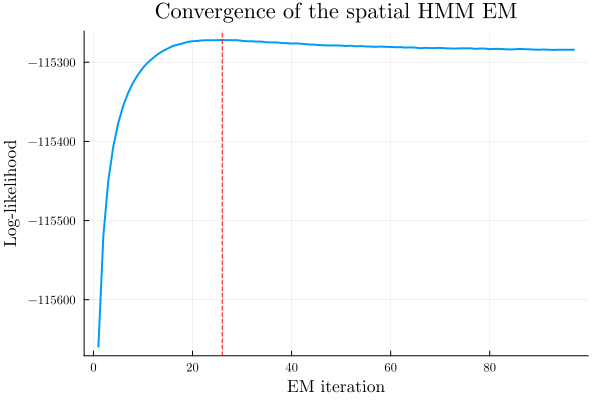
Visualisation of the fitted model parameters
Transition matrix
begin
pA = [plot(legendfont=14, foreground_color_legend=nothing, background_color_legend=nothing, legend_columns=4, tickfont=12, legendfontsize=16) for k in 1:K]
for k in 1:K
[plot!(pA[k], hmm_spa.A[k, l, :], c=my_color(l, K), label=L"Q_{%$(k)\to %$(l)}", legend=:top, lw=1.75) for l in 1:K]
hline!(pA[k], [0.5], c=:black, label=:none, s=:dot)
xticks!(pA[k], vcat(dayofyear_Leap.(Date.(2000, 1:12)), 366), vcat(string.(monthabbr.(1:12)), ""), xlims=(0, 367), ylims=(0, 1))
end
pallA = plot(pA..., size=(1000, 500))
end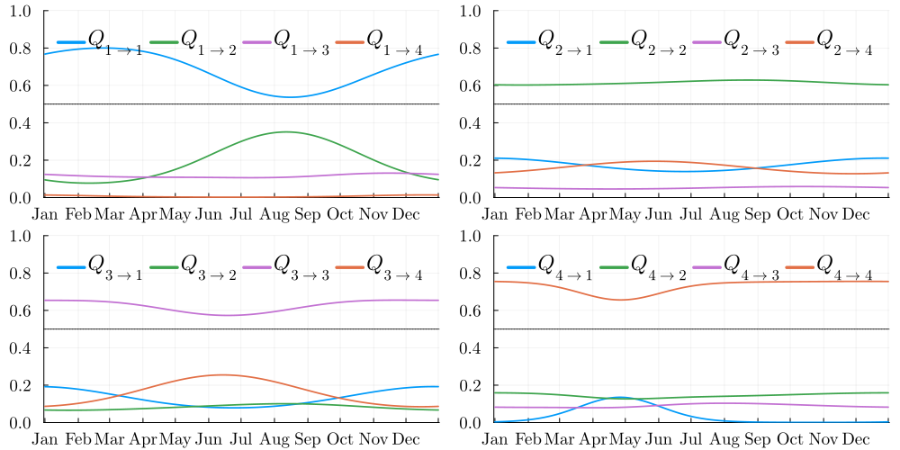
Spatial range $R(t)$
The seasonal range $R_k(t)$ controls the spatial correlation length for each hidden state $k$. A larger range means stronger spatial dependence between stations.
begin
pr = plot(title="Spatial range per hidden state", ylabel="Range (km)", tickfont=12, legendfontsize=14)
for k in 1:K
plot!(pr, 1:T, hmm_spa.R[k, :], c=my_color(k, K), label=L"k = %$k", lw=2)
end
xticks!(pr, vcat(dayofyear_Leap.(Date.(2000, 1:12)), 366), vcat(string.(monthabbr.(1:12)), ""), xlims=(0, 367))
end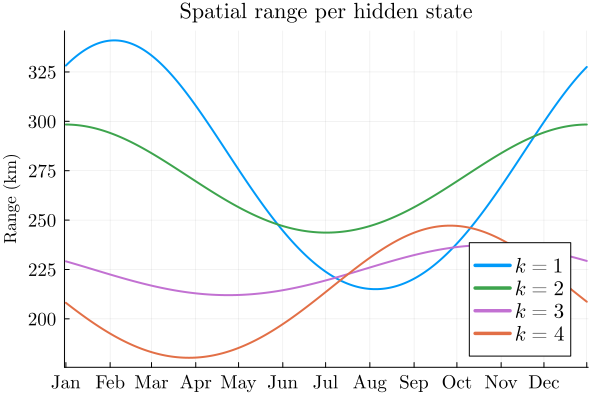
Rain occurrence probabilities $\mathbb{P}(Y = \text{wet} \mid Z = k, H = h)$
begin
mm = 1 # h = 1: day before was dry
jt = D
pB = [plot(legendfont=14, title="$(station_name[j])", titlefontsize=17, tickfont=14, legendfontsize=16) for j in 1:jt]
for j in 1:jt
[plot!(pB[j], hmm_spa.B[k, :, j, mm], c=my_color(k, K), label=islabel(j, 3, L"\mathbb{P}(Y = \textrm{wet}\mid Z = %$k, H = \textrm{dry})"), lw=2) for k in 1:K]
hline!(pB[j], [0.5], c=:black, label=:none, s=:dot)
xticks!(
pB[j],
vcat(dayofyear_Leap.(Date.(2000, 1:12)), 366),
vcat(string.(first.(monthabbr.(1:12))))
)
xlims!(pB[j], (0, 367))
ylims!(pB[j], (0, 1))
end
pallB = plot(pB[staid_lat]..., size=(3000 / 2, 1000 / 1), layout=(2, 5))
end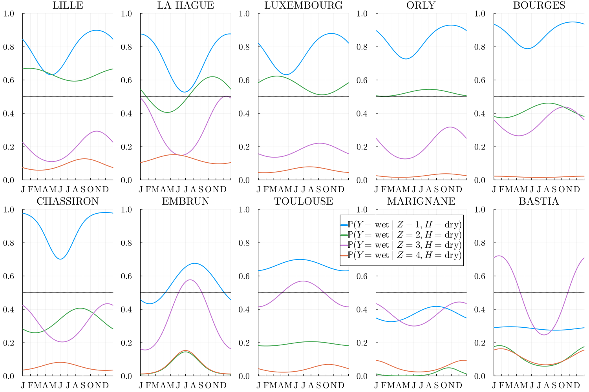
Spatial map of mean rain probability
memory_past_cat = 11Mean rain probability per hidden state $k$: $\overline{\mathbb{P}}(Y = \text{Rain}\mid Z = k, H = 1)$
p_FR_map_mean_prob = map_with_stations(LON_idx, LAT_idx, [[mean(hmm_spa.B[k, :, j, memory_past_cat]) for j in 1:D] for k in 1:K], colorbar_show=true, colorbar_label=L"\mathbb{P}(Y = \text{Rain}\mid Z = k, H = 1)", precision_scale=precision_scale)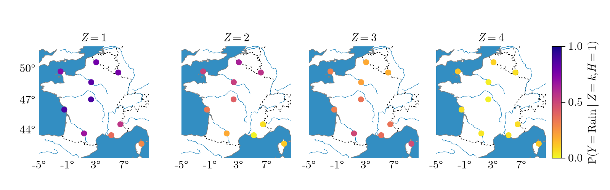
Inference of the historical hidden states
Viterbi algorithm
ẑ = viterbi(hmm_spa, Y, Y_past; n2t=n2t, QMC_m=QMC_m)
ẑ_per_cat = [findall(ẑ .== k) for k in 1:K]4-element Vector{Vector{Int64}}:
[1, 8, 9, 10, 11, 12, 14, 15, 16, 17 … 23358, 23359, 23360, 23361, 23362, 23364, 23365, 23366, 23367, 23368]
[2, 18, 19, 20, 21, 34, 35, 36, 37, 38 … 23290, 23291, 23292, 23294, 23295, 23296, 23297, 23369, 23370, 23371]
[6, 7, 13, 31, 40, 41, 42, 45, 46, 47 … 23337, 23338, 23339, 23345, 23346, 23347, 23348, 23349, 23350, 23363]
[3, 4, 5, 32, 33, 53, 54, 55, 56, 57 … 23270, 23271, 23272, 23273, 23274, 23372, 23373, 23374, 23375, 23376]Visualisation of the historical sequence of hidden states
year_range = unique(year.(data_stations[1][1+local_order:end, :DATE]));
idx_year = [findall(x -> year.(x) == m, data_stations[1][1+local_order:end, :DATE]) for m in year_range];
select_year = unique(sort([4:10:length(year_range); 21; 48; 64]))
begin
year_nb = length(select_year)
z_hat_mat = zeros(year_nb, 366)
for (i, y) in enumerate(select_year)
if isleapyear(year_range[y])
z_hat_mat[i, :] = ẑ[idx_year[y]]
else
z_hat_mat[i, :] = [ẑ[idx_year[y]]; 0]
end
end
thick = 1
heatmap(z_hat_mat, colorbar=:none, c=my_palette(K), minorticks=:false, framestyle=:xbox, grid=:none, thickness_scaling=thick)
xticks!(vcat(dayofyear_Leap.(Date.(2000, 1:12)), 366), vcat(string.(monthabbr.(1:12)), ""), xlims=(0, 367), xtickfontsize=14 / thick, ytickfontsize=14 / thick)
hline!((1:year_nb) .+ 0.5, c=:black, legend=:none, lw=4)
ylims!(0.5, year_nb + 0.5)
pviterbi = yticks!(1:year_nb, string.(year_range[select_year]), size=(1000, 600))
end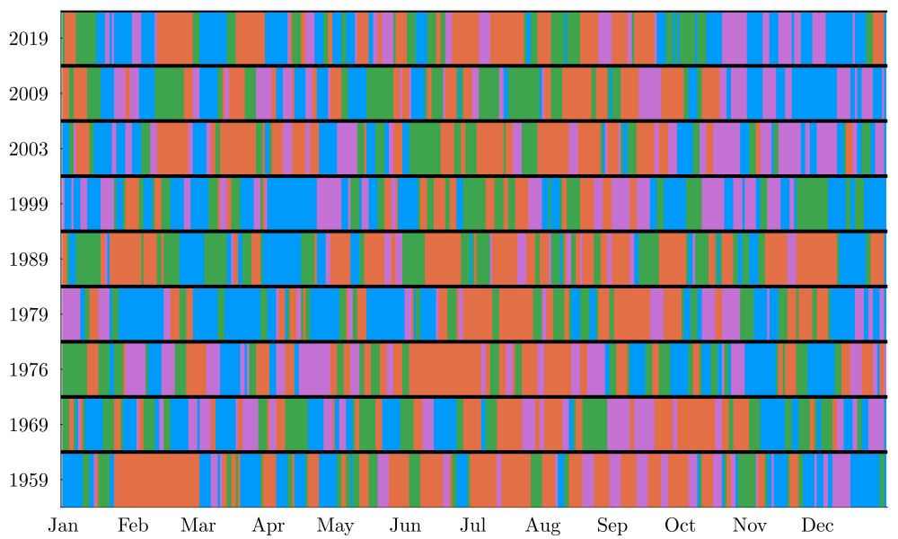
Sample the spatial HMM model and output the sequence of hidden states and multi-site dry/wet.
Nb = 1000
begin
zs = zeros(Int, N, Nb)
ys = zeros(Bool, N, D, Nb)
@time "Simulations Z, Y (spatial HMM)" for i in 1:Nb
zs[:, i], ys[:, :, i] = rand(hmm_spa, n2t; y_ini=Yall[1:local_order, :], z_ini=1, seq=true)
end
endSimulations Z, Y (spatial HMM): 225.419952 seconds (374.99 M allocations: 59.790 GiB, 5.86% gc time, 0.32% compilation time)The WGEN model
We will compare to the WGEN model that propose Markov chain of order 4 for rain occurrences (fitted monthly) and laten gaussian model for multisite occurrences (fitted monthly).
- Wilks, D. S. "Multisite generalization of a daily stochastic precipitation generation model". Journal of Hydrology, (1998). https://doi.org/10.1016/S0022-1694(98)00186-3.
- Srikanthan, Ratnasingham, et Geoffrey G. S. Pegram. "A nested multisite daily rainfall stochastic generation model". Journal of Hydrology 2009. https://doi.org/10.1016/j.jhydrol.2009.03.025.
wgen_order = 4
idx_months = [findall(x -> month.(x) == m, data_stations[1][1+local_order:end, :DATE]) for m in 1:12]
wgen4_model = fit_wgen(Y, idx_months, wgen_order)
ys_wgen = similar(ys)
@time "Simulation Y wgen 4" for i in 1:Nb
ys_wgen[:, :, i] = rand(wgen4_model, 1956:2019; Y_ini=vcat(rand(Bool, wgen_order - local_order, D), Y_past))
endSimulation Y wgen 4: 118.206508 seconds (1.90 G allocations: 66.160 GiB, 6.35% gc time)Non-spatial HMM simulations
Simulate from the independent (non-spatial) ARPeriodicHMM fitted in Step 1, for comparison.
ys_ind = similar(ys)
zs_ind = zeros(Int, N, Nb)
@time "Simulations Z, Y (HMM_ind)" for i in 1:Nb
zs_ind[:, i], ys_ind[:, :, i] = rand(hmm_ind, n2t; y_ini=Yall[1:local_order, :], z_ini=1, seq=true)
endSimulations Z, Y (HMM_ind): 55.533590 seconds (420.27 M allocations: 24.070 GiB, 6.38% gc time)Results
Spell distribution
select_month to choose the month where to compute the spell distributions (summer month, winter, etc.) select_month = 1:12 corresponds to all months.
select_month = 1:12
idx_months = [findall(x -> month.(x) == m, data_stations[1][1+local_order:end, :DATE]) for m in 1:12]
idx_month_vcat = vcat(idx_months[select_month]...)
idx_all = [intersect(yea, mon) for yea in idx_year, mon in idx_months];Historic spells
len_spell_hist = [pmf_spell(Y[idx_month_vcat, j], dw) for j in 1:D, dw in 0:1];Simulation spells
len_spell_simu = [pmf_spell(ys[idx_month_vcat, j, i], dw) for i in 1:Nb, j in 1:D, dw in 0:1];Dry spell
make_range(y, step=1) = range(extrema(y)..., step=step)
begin
dry_or_wet = 1 # dry
p_spell_dry = [plot(ylims=(1e-4, 1e-0), tickfont=11, legendfontsize=13) for j = 1:D]
for j = 1:D
all_spells = len_spell_simu[:, j, dry_or_wet]
spell_range = 1:1:(1+maximum(vcat(reduce(vcat, all_spells), len_spell_hist[j, dry_or_wet])))
errorlinehist!(p_spell_dry[j], all_spells, groupcolor=:grey, legend=:topright, label=islabel(j, staid_lat[[1]], L"Simu $q_{0,100}$"), norm=:probability, bins=spell_range, errortype=:percentile, percentiles=[0, 100], fillalpha=0.4, centertype=:median)
errorlinehist!(p_spell_dry[j], all_spells, groupcolor=:red, label=islabel(j, staid_lat[[1]], L"Simu $q_{25,75}$"), norm=:probability, bins=make_range(reduce(vcat, all_spells)), errortype=:percentile, percentiles=[25, 75], fillalpha=0.5, centertype=:median)
histo_spell = len_spell_hist[j, dry_or_wet]
errorlinehist!(p_spell_dry[j], [histo_spell], label=islabel(j, staid_lat[[1]], "Obs"), groupcolor=:blue, lw=1.5, norm=:probability, bins=spell_range, errortype=:percentile, alpha = 0.8)
xlims!(p_spell_dry[j], 0, 2 + maximum(1.5maximum.(histo_spell)))
yaxis!(:log10)
end
[xlabel!(p_spell_dry[j], "Nb of days", xlabelfontsize=12) for j in staid_lat[6:10]]
[ylabel!(p_spell_dry[j], "PMF", ylabelfontsize=12) for j in staid_lat[[1, 6]]]
[title!(p_spell_dry[j], station_name[j], titlefontsize=13) for j = 1:D]
pall_spell_dry = plot(p_spell_dry[staid_lat]..., size=(3000 / 2.5, 1000 / 1.5), layout=(2, 5), left_margin=0.5cm, bottom_margin=0.275cm)
end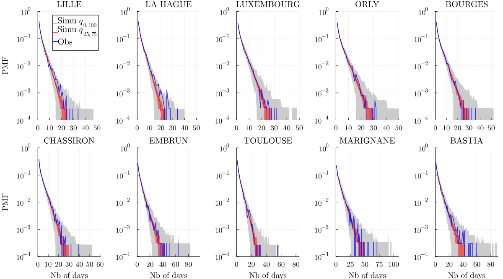
Wet spell
begin
dry_or_wet = 2 # wet
p_spell_wet = [plot(ylims=(1e-4, 1e-0), tickfont=11, legendfontsize=13) for j = 1:D]
for j = 1:D
all_spells = len_spell_simu[:, j, dry_or_wet]
spell_range = 1:1:(1+maximum(vcat(reduce(vcat, all_spells), len_spell_hist[j, dry_or_wet])))
errorlinehist!(p_spell_wet[j], all_spells, groupcolor=:grey, legend=:topright, label=islabel(j, staid_lat[[1]], L"Simu $q_{0,100}$"), norm=:probability, bins=spell_range, errortype=:percentile, percentiles=[0, 100], fillalpha=0.4, centertype=:median)
errorlinehist!(p_spell_wet[j], all_spells, groupcolor=:red, label=islabel(j, staid_lat[[1]], L"Simu $q_{25,75}$"), norm=:probability, bins=spell_range, errortype=:percentile, percentiles=[25, 75], fillalpha=0.5, centertype=:median)
histo_spell = len_spell_hist[j, dry_or_wet]
errorlinehist!(p_spell_wet[j], [histo_spell], label=islabel(j, staid_lat[[1]], "Obs"), groupcolor=:blue, lw=1.5, norm=:probability, bins=spell_range, errortype=:percentile, alpha = 0.8)
xlims!(p_spell_wet[j], 0, 2 + maximum(1.5maximum.(histo_spell)))
yaxis!(:log10)
end
[xlabel!(p_spell_wet[j], "Nb of days", xlabelfontsize=12) for j in staid_lat[6:10]]
[ylabel!(p_spell_wet[j], "PMF", ylabelfontsize=12) for j in staid_lat[[1, 6]]]
[title!(p_spell_wet[j], station_name[j], titlefontsize=13) for j = 1:D]
pall_spell_wet = plot(p_spell_wet[staid_lat]..., size=(3000 / 2.5, 1000 / 1.5), layout=(2, 5), left_margin=0.5cm, bottom_margin=0.275cm)
end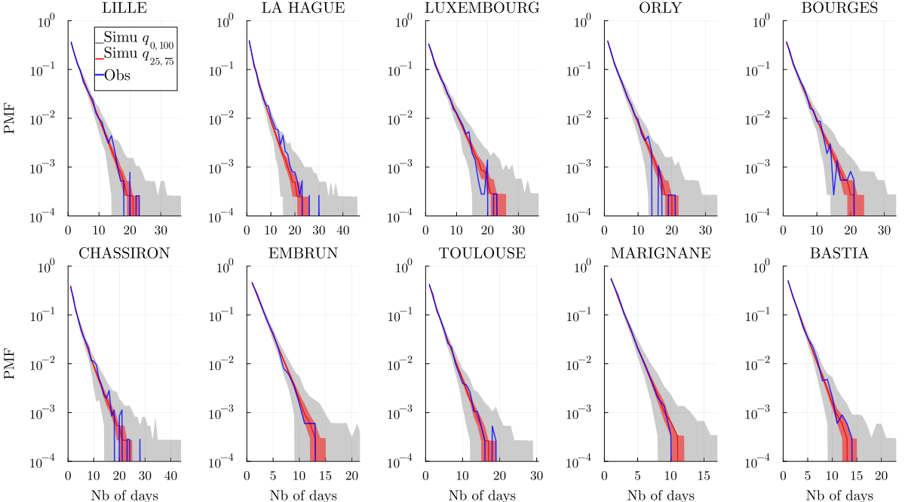
Seasonal areal dry spells
RRmax = 0
ROR = [mean(r .> RRmax) for r in eachrow(Y)]
RORs = [[mean(r .> RRmax) for r in eachrow(rr)] for rr in eachslice(ys, dims=3)]
RORs_ind = [[mean(r .> RRmax) for r in eachrow(rr)] for rr in eachslice(ys_ind, dims=3)]
RORswgen = [[mean(r .> RRmax) for r in eachrow(rr)] for rr in eachslice(ys_wgen, dims=3)]
JJA = [6, 7, 8]
MAM = [3, 4, 5]
SON = [9, 10, 11]
DJF = [12, 1, 2]
SEASONS = [DJF, MAM, JJA, SON]
seasonname = ["DJF", "MAM", "JJA", "SON"]
idx_seasons = [findall(month.(data_stations[1][1+local_order:end, :DATE]) .∈ tuple(season)) for season in SEASONS]
let
perc = 0.1
QQ = [5, 95]
p_spell_rors = [plot(ylims=(5e-4, 1e-0), xlims=(-0.01,25), tickfont=11, legendfontsize=13, legend=:left) for i in eachindex(idx_seasons)]
xlabel!.(p_spell_rors[3:end], "Nb of days", xlabelfontsize=12)
ylabel!.(p_spell_rors[[1, 3]], "PMF", ylabelfontsize=12)
for m in eachindex(idx_seasons)
len_ror_hist = pmf_spell(ROR[idx_seasons[m]] .≤ perc, 1)
len_ror_simu = [pmf_spell(RORs[i][idx_seasons[m]] .≤ perc, 1) for i in 1:Nb]
len_ror_simu_ind = [pmf_spell(RORs_ind[i][idx_seasons[m]] .≤ perc, 1) for i in 1:Nb]
len_ror_simuwgen = [pmf_spell(RORswgen[i][idx_seasons[m]] .≤ perc, 1) for i in 1:Nb]
errorlinehist!(p_spell_rors[m], [len_ror_hist], groupcolor=:blue, lw=2, norm=:probability, bins=make_range(len_ror_hist), errortype=:percentile,
label=label = islabel(m, 1, "Obs"),
legend=:bottom)
yaxis!(:log10)
sim_range = make_range(reduce(vcat, len_ror_simuwgen))
errorlinehist!(p_spell_rors[m], len_ror_simuwgen, groupcolor=:green, legend=:topright,
label=islabel(m, 1, "WGEN 4"),
norm=:probability, bins=sim_range, errortype=:percentile, percentiles=QQ, fillalpha=0.25, centertype=:median, linewidth=2)
sim_range = make_range(reduce(vcat, len_ror_simu_ind))
errorlinehist!(p_spell_rors[m], len_ror_simu_ind, groupcolor=:grey, legend=:topright,
label=islabel(m, 1, "HMM_ind"),
norm=:probability, bins=sim_range, errortype=:percentile, percentiles=QQ, fillalpha=0.25, centertype=:median, linewidth=2)
sim_range = make_range(reduce(vcat, len_ror_simu))
errorlinehist!(p_spell_rors[m], len_ror_simu, groupcolor=:orange, legend=:topright,
label=islabel(m, 1, "HMM_spa"),
norm=:probability, bins=sim_range, errortype=:percentile, percentiles=QQ, fillalpha=0.3, centertype=:median, alpha=1, linewidth=2)
annotate!(p_spell_rors[m], median(sim_range), 1.5, seasonname[m])
yticks!(10.0 .^ (-4:-0))
end
pall = plot(p_spell_rors..., layout=(2, 2), size=(1000, 600), top_margin=0.34cm, left_margin=0.3cm, bottom_margin=0.22cm)
file_name = "ROR_spell_season_perc_$(perc)_Q_$(QQ[1])_$(QQ[2])_no_inset"
file_name = replace(file_name, "." => "p")
pall
end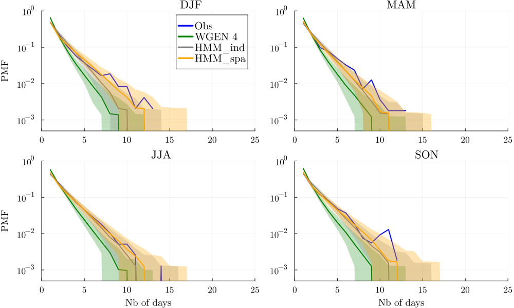
Correlations
Rain event dry/wet
cor_bin_hist = cor(reduce(hcat, [df.RO for df in data_stations]));
cor_bin_mean_simu = mean(cor(ys[:, :, i]) for i in 1:Nb);
cor_bin_mean_simu_ind = mean(cor(ys_ind[:, :, i]) for i in 1:Nb);
cor_bin_mean_simu_wgen = mean(cor(ys_wgen[:, :, i]) for i in 1:Nb);
begin
plots_cor_bin = [plot(-0.1:0.1:0.8, -0.1:0.1:0.8, aspect_ratio=true, label=:none, xlabelfontsize=16, ylabelfontsize=16, tickfont=11, legendfontsize=13) for _ in 1:1]
scatter!(plots_cor_bin[1], vec_triu(cor_bin_hist), vec_triu(cor_bin_mean_simu), label="Correlations vs SHHMM-Spa", xlabel="Observations", ylabel="Simulations", c=:orange)
# scatter!(plots_cor_bin[1], vec_triu(cor_bin_hist), vec_triu(cor_bin_mean_simu_ind), label="Correlations vs HMM", c=:gray)
# scatter!(plots_cor_bin[1], vec_triu(cor_bin_hist), vec_triu(cor_bin_mean_simu_wgen), label="Correlations vs WGEN", c=:green)
[xlims!(plots_cor_bin[i], -0.1, 1) for i in 1:1]
[ylims!(plots_cor_bin[i], -0.1, 1) for i in 1:1]
annotate!(0.2, 0.7, "MSE ≃ $(round(mean(abs2, vec_triu(cor_bin_hist) - vec_triu(cor_bin_mean_simu)), digits = 4))")
plot_cor_bin = plot(plots_cor_bin...)
end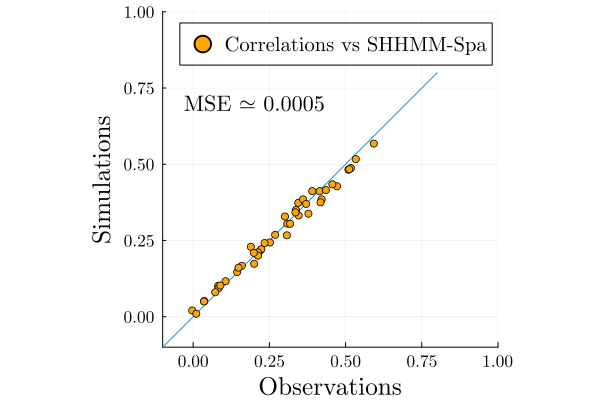
This page was generated using Literate.jl.